前言
关注 React 的同学应该知道，React 在 19 年推出了 Hooks API，从而可以抛弃难以理解的 class 完全转向函数式组件。当然，它对开发者的意义不止于此，更为重要的是它提供了从组件中提取状态逻辑的能力，让我们能以业务逻辑为细粒度拆分组件，并在组件之间复用业务逻辑。
后续尤大马上发布了 Vue Function-based API RFC（在之后重写成了 Composition API），并作为 Vue3 的核心特性，可想而知它的重要性。
接下来让我们抛开 React，来看看 Composition API 都有哪些内容。
一、介绍
1.1 什么是 Composition API ？
Vue 3 中引入的一种新的编写 Vue 组件的方式，可以将 2.x 中与组件逻辑相关的选项以 API 函数的形式重新设计。
1.2 基本例子
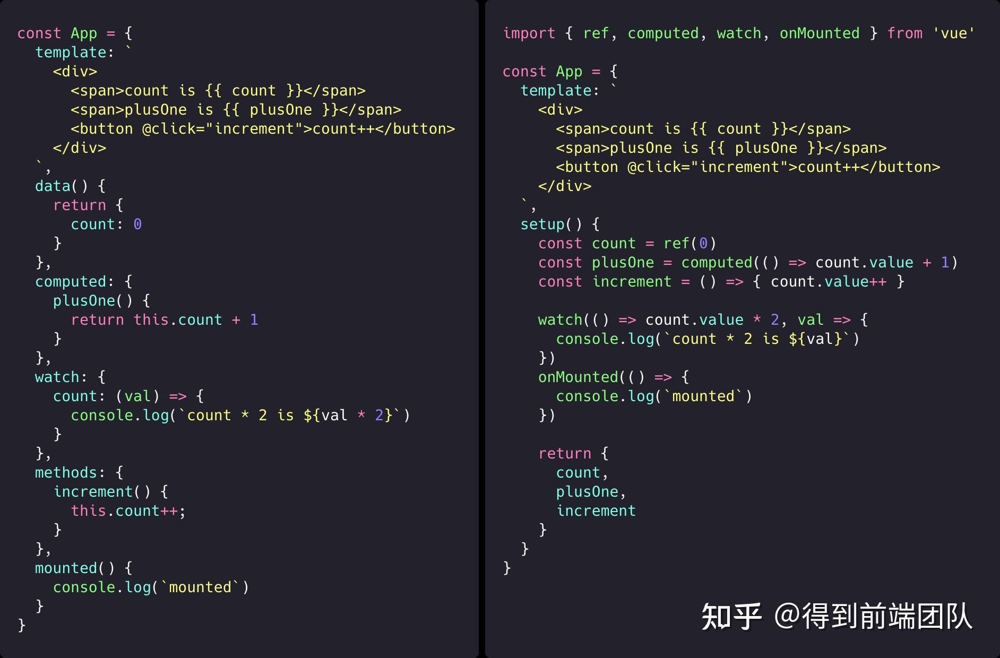
我们使用 Composition API 对左侧进行重构，其实就是将组件选项抽离到了 setup 函数当中进行编排，并在最后把模板用到的变量返回，最后的结果和将变量定义在 data 或者 methods 中没有什么区别。
当然，setup 和 2.x 的选项一起混用也是没有问题的，并且依旧可以通过 this.xx 访问到 setup 返回的变量。
❓ 如果只是把代码迁移到 setup 函数中，变成一长条的面条式代码，有什么意义呢
1.3 更进一步的例子
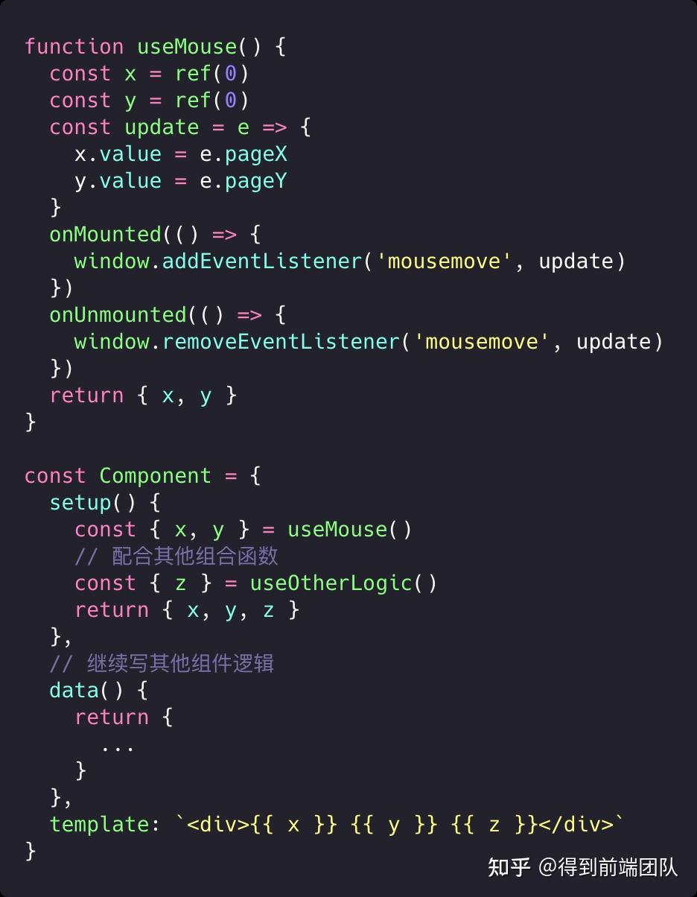
这一次我们将 setup 中的代码进一步抽离，拆出了 useMouse 组合函数，里面封装了对鼠标位置的监听逻辑。useMouse 只需要将要暴露给组件的状态（x、y）以响应式的数据源的方式返回出来，就可以在我们的组件代码中使用。
对于 Component 来说，里面没有任何监听鼠标位置的逻辑代码，只需要调用 useMouse 拿到 x、y 即可。
❓ 这些我用 Mixins 也能实现呀
1.4 更更进一步的例子
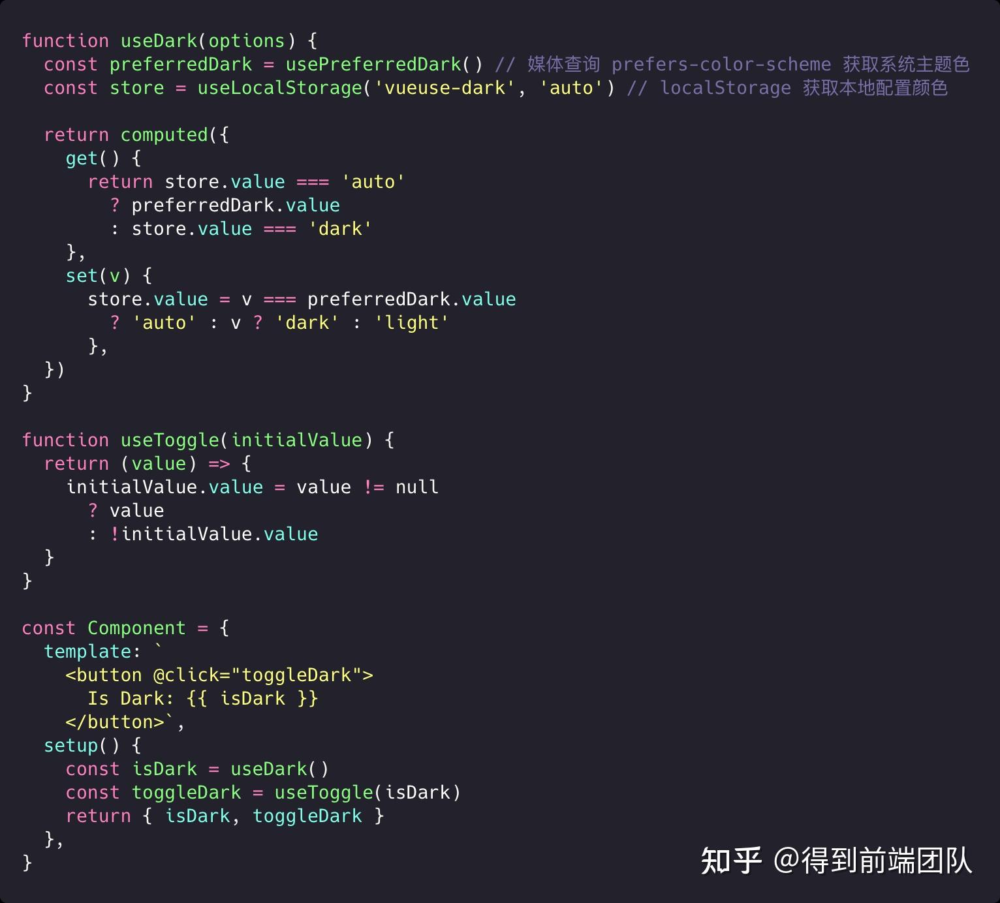
首先我们通过模板来理解 useDark 的工作内容，就是返回了一个表示是否是黑夜模式的布尔值，并且可以通过 useToggle 来快速得到一个 toggle 函数。
然后观察 useDark，我们可以看到它身为一个组合函数的同时，又调用了其他的组合函数 usePreferredDark 和 useLocalStorage 来获取系统主题色和本地配置色。当然，我们不需要太关心它们的具体实现，只需要专注于处理结果，并返回以本地配置色为优先的结果即可。
其中的组合函数调用关系如下图所示：
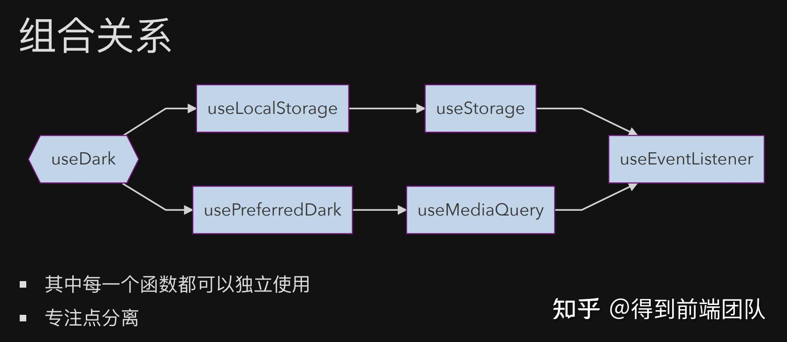
组合函数的底层又依赖了其他组合函数，比如 useLocalStorage 依赖统一封装了 SessionStorage 和 LocalStorage 逻辑的 useStorage，usePreferredDark 依赖封装了 window.matchMedia 逻辑的 useMediaQuery。它们最后又都通过 useEventListener 来做状态改变的响应，并且能自动卸载。
涉及的每一个函数都能独立使用，并且有自己的职责，最后进行组合。
这个例子来源于 VueUse.
当然，我们不可能总是写到这么通用的代码，但是在业务中也可以使用 Composition API 来对业务逻辑进行拆分，让每一个组合函数负责独立的业务，比如埋点上报、RichTextPanel 组件参数与回调、页面控件逻辑等。这些组件内的状态、方法现在我们可以将它提取到组合函数中，可以是为了复用，也可以仅仅是为了让 .vue 文件看起来更干净。
二、API
2.1 setup
setup 是组合式 API 的入口点，它的执行时机在 beforeCreate 和 created，并且只会执行一次。
所以我们不需要 onBeforeCreate 和 onCreated，这些钩子对应的代码应该直接在 setup 函数中编写。
它接收两个参数：
- 响应式的
props - 非响应式的
context，包含：attrs、slots、emit
它执行的时候组件实例尚未被创建，所以我们无法访问 data、computed、methods 这些组件选项。
如果它返回一个对象，那么对象的 property 就可以在选项或者模板中访问到。
2.1.1 返回渲染函数
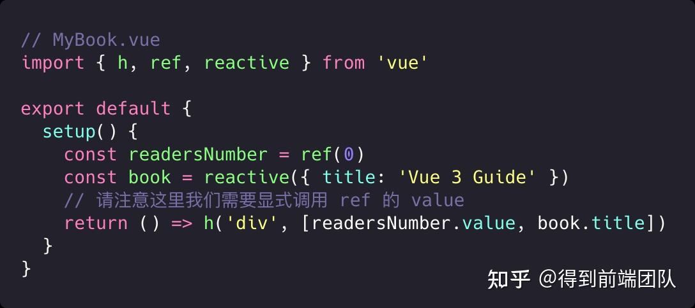
在 Babel Plugin 支持下可以返回 JSX：feat: add @vue/composition-api support #142
2.1.2 getCurrentInstance
如果确实需要访问组件实例，可以使用 getCurrentInstance()。
只能在 setup、生命周期钩子和组合函数中使用。
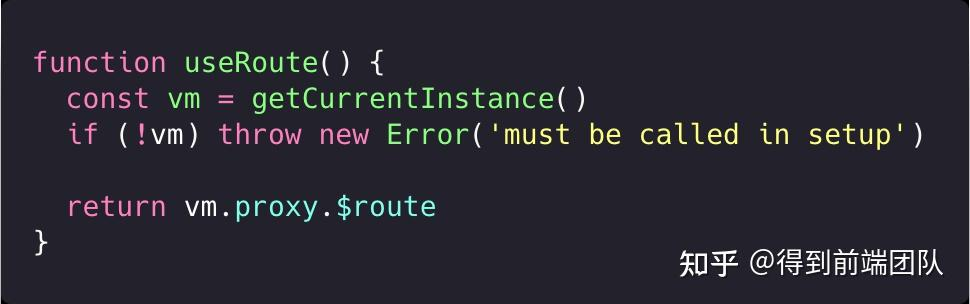
2.2 reactive
返回对象的响应式副本，相当于 Vue.observable(obj) 。
该响应式转换是 ” 深度转换 “——它会影响嵌套对象传递的所有 property。
怎么理解这里的响应式呢？就是我们在渲染期间使用响应式对象，当值改变的时候视图会自动更新，就和修改挂在 data 对象里的值一样。
2.2.1 无法代理原始值类型
reactive() 函数可以代理一个对象，但不能代理基本类型值，这是因为原始值类型只有值而没有引用，无法追踪变量的后续变化。
2.2.2 响应丢失
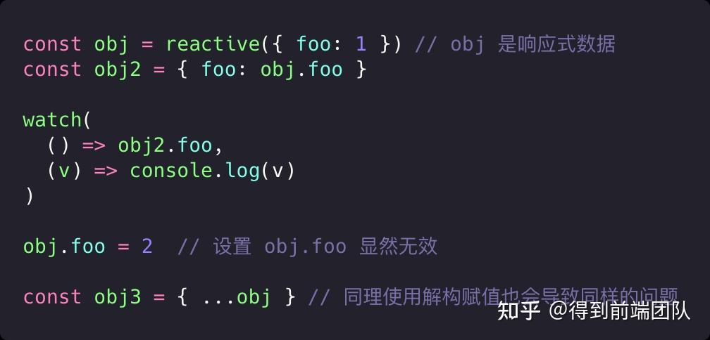
2.3 ref
接收一个值，返回的响应式且可变的包装对象。
它只有一个属性：.value ，该属性指向内部被包装的值。这个值可以直接修改。
我们没法用 reactive 处理原始值类型，但是我们可以创建一个对象将原始值挂在它的同名 property 下，再传递给 reactive。Vue 提供了 ref 来替我们做这件事。
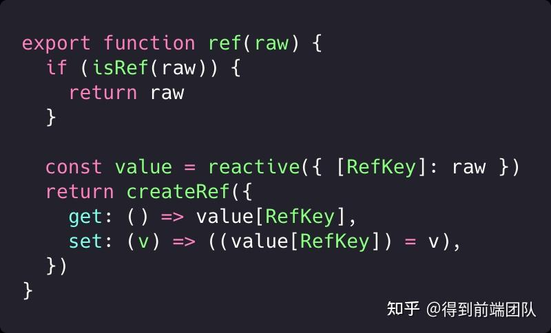
2.3.1 自动解包（不需要加 .value 的情况）
- ref 在模板中会自动解包
2.watch 可以直接接受 ref 作为监听对象，在回调函数中会直接返回解包后的值。
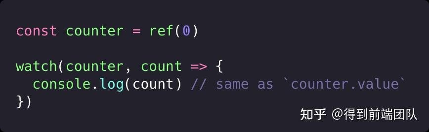
- 使用 reactive() / readonly() 解包对象嵌套的 ref
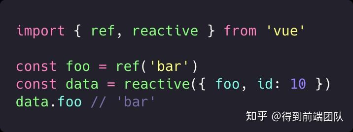
但是从 Array 或原生集合类型如 Map 访问 ref 时，不会进行解包。
2.3.2 unref（ref 的反向操作）
传入一个 ref，返回 ref.value，否则原样返回。
纠结是否需要加 .value（比如某个函数参数的类型是 Ref<number> | number）来取值，可以使用 unref 来解包。
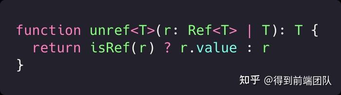
2.3.3 重复使用已有 ref
将一个 ref 传递给 ref() 构造函数，它会原样返回。
如果你的函数需要返回一个 ref，但是不确定参数的类型，可以直接 return ref(param)，如果是 ref 则会复用，不是则返回一个新的 ref。
2.3.4 可以使用 ES6 解构语法
解构一个值是 ref 的对象不会丢失响应式。
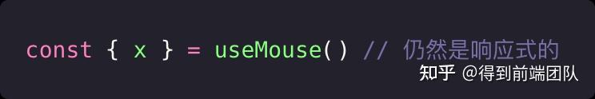
2.3.5 this.$refs 的解决方案
在虚拟 DOM 补丁算法中，如果 VNode 的 ref 键对应于渲染上下文中的 ref，则 VNode 的相应元素或组件实例将被分配给该 ref 的值。
由于是在虚拟 DOM 挂载 / 打补丁过程中执行的，因此 ref 只会在初始渲染之后才获得赋值。
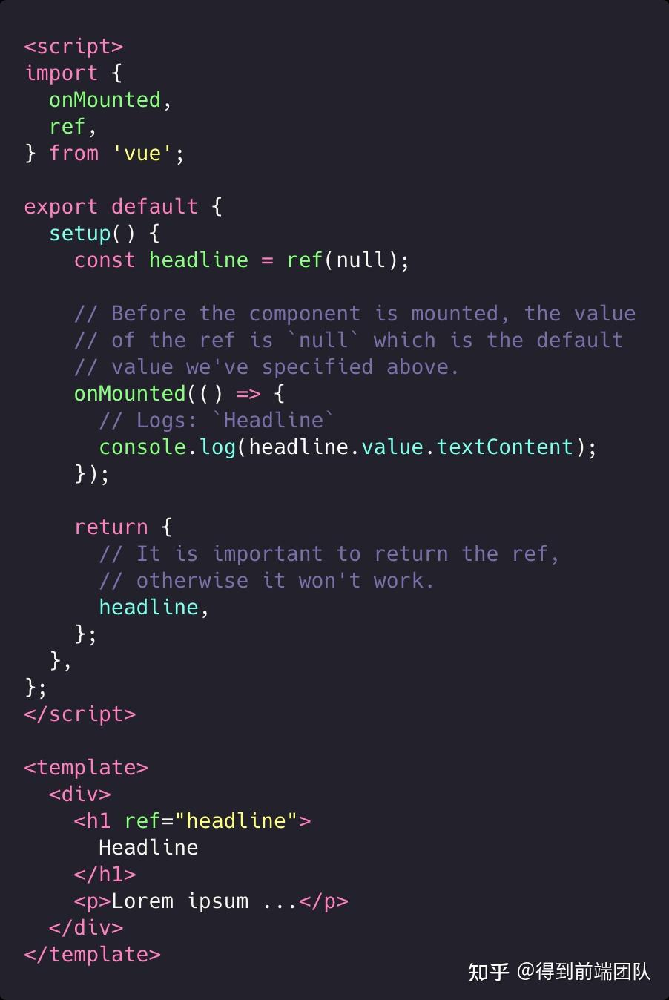
2.4 toRefs
将响应式对象转换为普通对象，并对每个 property 对应的 value 转换成 ref。
可以用来解决 reactive 或者 props 在解构的时候丢失响应式的问题。
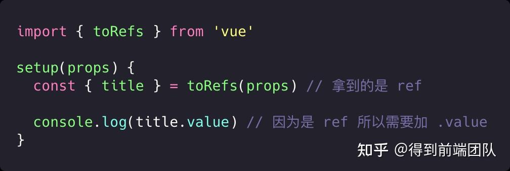
2.5 computed
接收 getter 函数，返回一个只读的响应式 ref 对象。
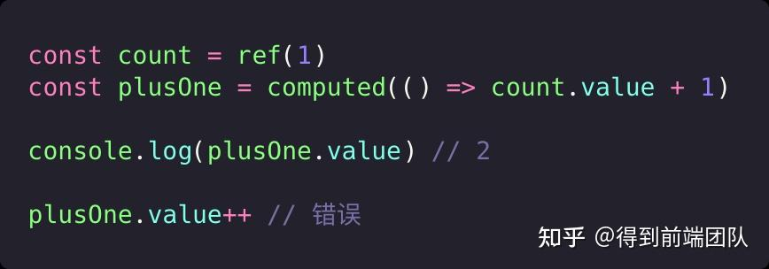
如果参数是具有 get 和 set 函数的对象，返回的结果会是一个可写的响应式 ref 对象。
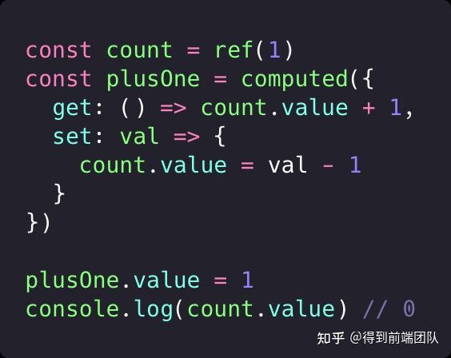
2.6 watch
第一个参数接收数据源，可以是：
- getter 函数、ref
- 包含上述两种类型的数组（也就是可以 watch 多个源，其中任一个变化都会触发回调）
第二个参数是回调函数，在数据源变动的时候触发。
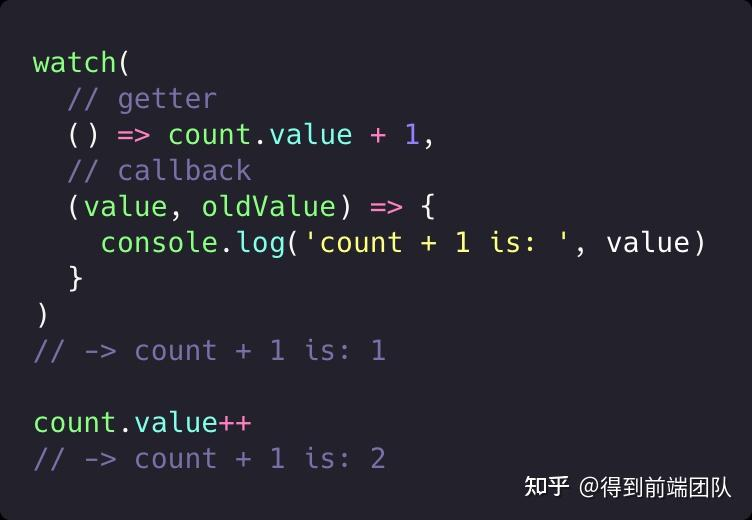
2.6.1 停止观察
watch() 返回一个停止观察的函数：
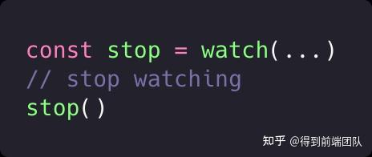
如果 watch() 是在一个组件的 setup() 或是生命周期函数中被调用的，那么该 watcher 会在当前组件被销毁时也一同被自动停
2.6.2 清理 effect
watcher 的回调会接收到的第三个参数是一个用来注册清理操作的函数。
有时候当观察的数据源变化后，我们可能需要对之前所执行的副作用进行清理。举例来说，一个异步操作在完成之前数据就产生了变化，我们可能要撤销还在等待的前一个操作。
调用这个函数可以注册一个清理函数，执行时机在：
- 回调被下一次调用前
- watcher 被停止前
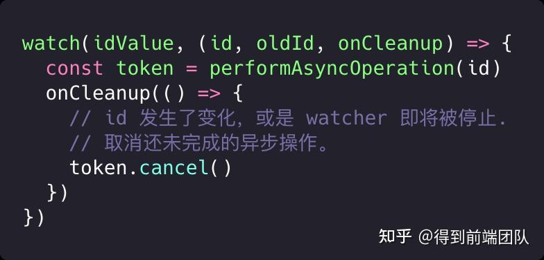
三、设计动机
3.1 从 Class API 到 Function API 再到 Composition API
我们可以在 Vue RFC 中看到最初的 Class API 到 Function-based Component API 取其 FP 的精华，再到被修订为 Composition API 采用 Reactivity 的过程。
3.2 解决了什么问题
对比 2.x 对象式 API：
- 极易复用。
- 状态可以从组件中拆出来放到组合函数中。
- 更清楚的逻辑。
- 代码可以按功能 / 逻辑组织，而不是分散在各个选项中。
- 更好的 TypeScript 类型支持。
- 基于 Class 的 API 存在 TS 类型问题，而基于函数的 API 天然对类型推导很友好，因为 TS 对函数的参数、返回值和泛型的支持已经非常完备。
- 更小的打包体积。
- 基于函数的 API 每一个函数都可以作为 named ES export 被单独引入，这使得它们对 tree-shaking 非常友好。没有被使用的 API 的相关代码可以在最终打包时被移除。
- 同时，基于函数 API 所写的代码也有更好的压缩效率，因为所有的函数名和 setup 函数体内部的变量名都可以被压缩，但对象和 class 的属性 / 方法名却不可以。
3.3 对比 2.x 的复用模式
Vue 2.x 目前的 API 我们有一些常见的逻辑复用模式，包括：
- Mixins
- 高阶组件 (Higher-order Components, aka HOCs)
- Renderless Components （基于 scoped slots / 作用域插槽封装逻辑的组件）
总体来说，以上这些模式存在以下问题：
- 模版中的数据来源不清晰。
- 举例来说，当一个组件中使用了多个 mixin 的时候，光看模版会很难分清一个属性到底是来自哪一个 mixin。HOC 也有类似的问题。
- 使用 Composition API 只需要观察 setup 函数就可以知道数据的来源。
- 命名空间冲突。
- 由不同开发者开发的 mixin 无法保证不会正好用到一样的属性或是方法名。HOC 在注入的 props 中也存在类似问题。
- 组合函数在使用和返回给渲染层的两个阶段都可以做重命名的操作。
- 性能。
- HOC 和 Renderless Components 都需要额外的组件实例嵌套来封装逻辑，导致无谓的性能开销。
- 组合函数没有创建额外的组件实例所带来的性能损耗。
3.4 对比 React Hooks
Composition API 虽然借鉴了 React Hooks，两者具有同等的基于函数抽取和复用逻辑的能力，但是出于框架的性质两者在实现上是天差地别的。
React Hooks 在每次组件渲染时都会调用，通过隐式地将状态挂载在当前的内部组件节点上，在下一次渲染时根据调用顺序取出。而 Vue 的 setup() 每个组件实例只会在初始化时调用一次 ，状态通过引用储存在 setup() 的闭包内。
也就是说，Composition API 相比 React Hooks：
- 整体上更符合 JavaScript 的直觉；
- Mutable 写法。
- 不受调用顺序的限制，可以有条件地被调用；
- Hooks 需要使用下标来获取对应的 state。
- 不会在后续更新时不断产生大量的内联函数而影响引擎优化或是导致 GC 压力；
- Hooks 的每次渲染都是单独的闭包。
- 不需要总是使用
useCallback来缓存传给子组件的回调以防止过度更新； - 如果给子组件传了函数，每次渲染都会被当作新 props。
- 不需要担心传了错误的依赖数组给
useEffect/useMemo/useCallback从而导致回调中使用了过期的值。 - Vue 的依赖收集是全自动的，可以做到最小粒度的更新。
这都是基于 Vue 的响应式更新能力。
有兴趣的同学可以通过下面的链接了解 React Hooks 的心智模型有多么沉重：
3.5 那么它有缺点吗？
3.5.1 ref 和 reactive 的区别
| ref | reactive |
|---|---|
| 可以处理原始值，也可以处理对象 | 只能处理对象 |
| 需要加 .value，需要考虑自动解包 | 不需要加 .value |
| 有单独的类型 | 和普通的对象没有什么区别，无法直接通过类型判断是否是响应式 |
| 可以使用解构赋值 | 不可以使用解构赋值，会丢失响应式 |
| 需要使用箭头函数包装才能使用 watch |
3.5.2 考虑响应式和 .value
虽然写 Composition API 不会有 useEffect 的困扰，还能使用完全一致的生命周期钩子函数，但是此次 Vue 把响应式 API 暴露给我们，实际上在编写代码的时候，需要考虑是否是响应式、是否是 ref 和响应式丢失的问题，也会带来一定的心智负担。
总结
面向生命周期编程 vs 面向业务逻辑编程 Composition API 带来了组件逻辑抽取和复用的优化，抽取逻辑会变得非常简单，所以我们不必只在需要复用逻辑的时候才抽取函数，也可以单纯为了更好地组织代码去抽取函数，以此避免每个逻辑任务的代码都被选项切成了多个碎片分散在各处。 当然如果组件足够简单，我们还是可以只使用 Options API，以原来的习惯写代码。我可以在 Vue 2 中使用吗？ 可以的，官方团队提供了可供 Vue 2 使用的插件： @vue/composition-api。 另外他们也计划让 Composition API 在 Vue 2.7 原生支持。